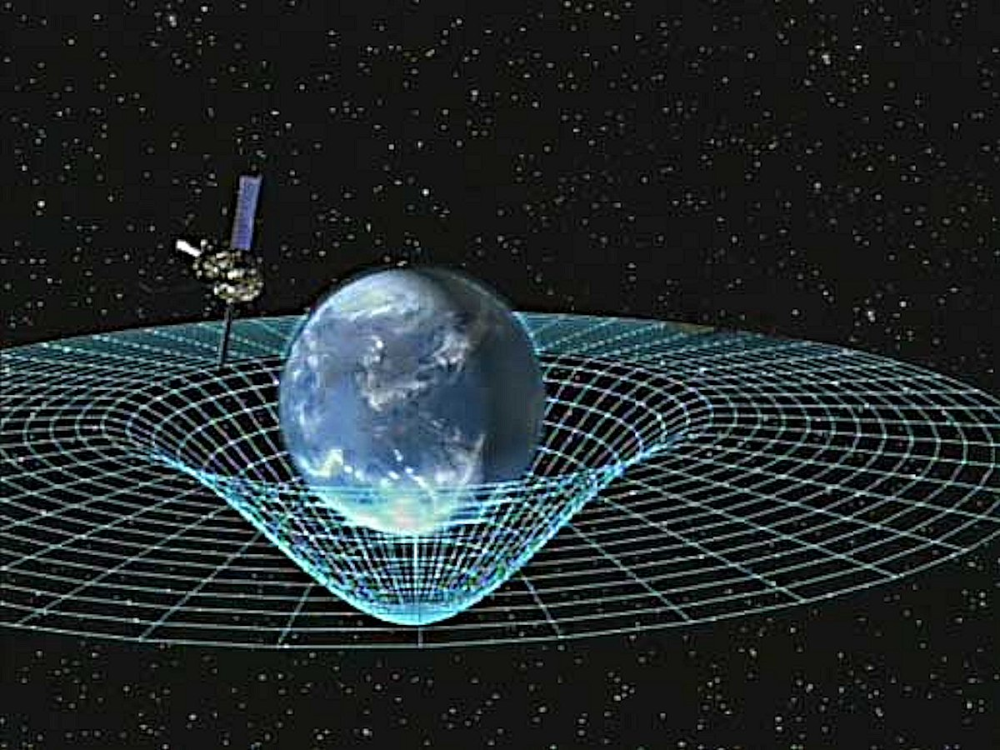

Maybe it's just my sense of taste; that, I, myself, as an individual, hold little capabilities of understanding intangible and nonexistent meanings of an artist's world.
I do not understand the world beyond a physical sense. We lack words to describe heavy abstractions except one; that is, unimaginative.
Anybody can create an abstraction, yet not everybody can create reality.
Accepting.
A world of mine